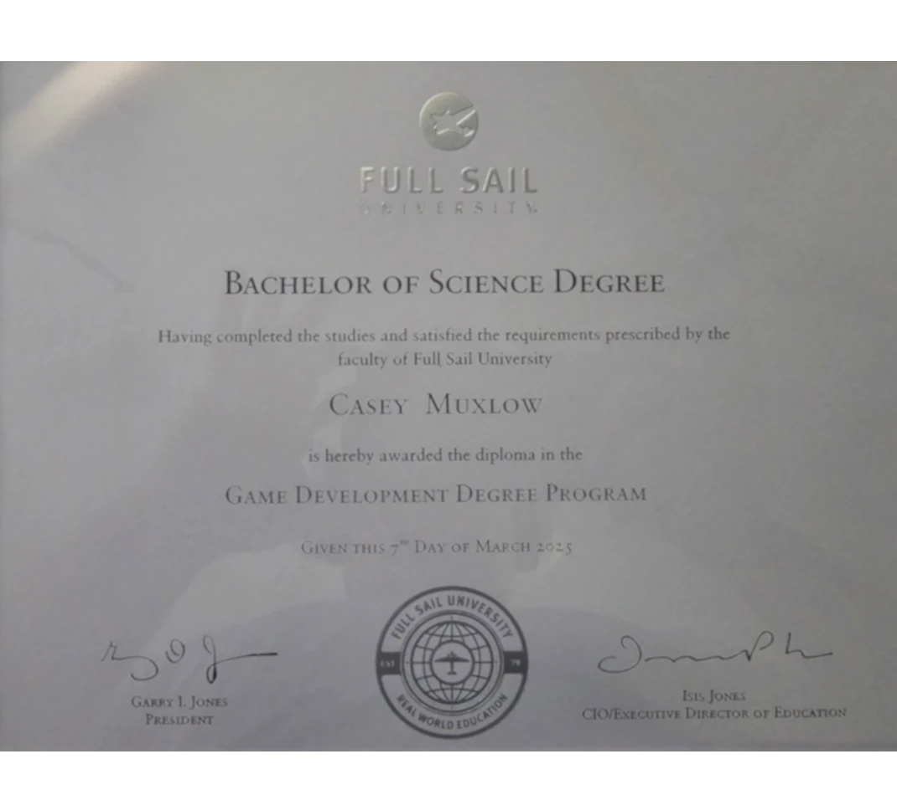
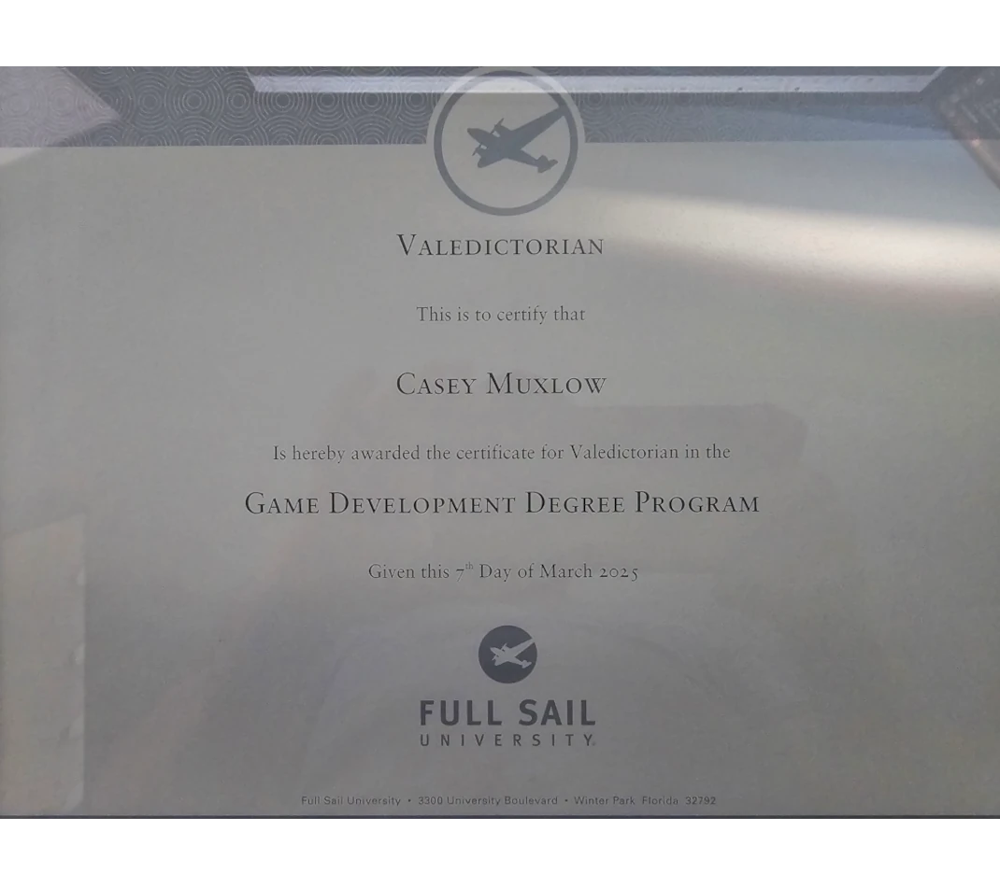
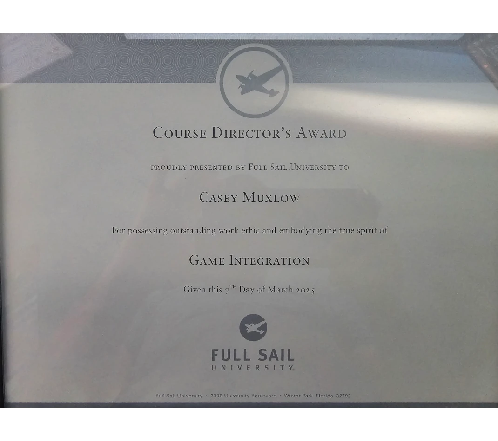

About Me
How It Started
I fell in love with video games at a very early age, but it was not until much later that I would decide to learn how to make them. In 2011 a calling found me to join the United States Marine Corps and I served Honorably from 2011 to 2016 on Active duty and then served in the Inactive Ready Reserves (IRR) from 2016 until 2019. The reason I left active duty was to take care of my father who later passed away due to cancer in 2019. At that time I was working in aviation, however while on active duty I had suffered a terrible back injury and the deterioration had become very advanced and I needed a career change.
While playing Destiny 2 I was still considering a new career path and suddenly the thought came out of pure frustration of the game. I decided that my new calling should be something I love to do and that would match my needs so why not become a game developer. So I took to the internet to study game development and I quickly found Full Sail University. While attending Full Sail I found my stride very quickly excelling in numerous fields.

I graduated from Full Sail University with my Bachelor of Science in the Game Development Degree Program.

Earning with my diploma the prestigious Valedictorian certificate.

Earning the Course Directors Award in Game Integration for my hard work on Specter Virus in Unreal Engine 5.2.1.